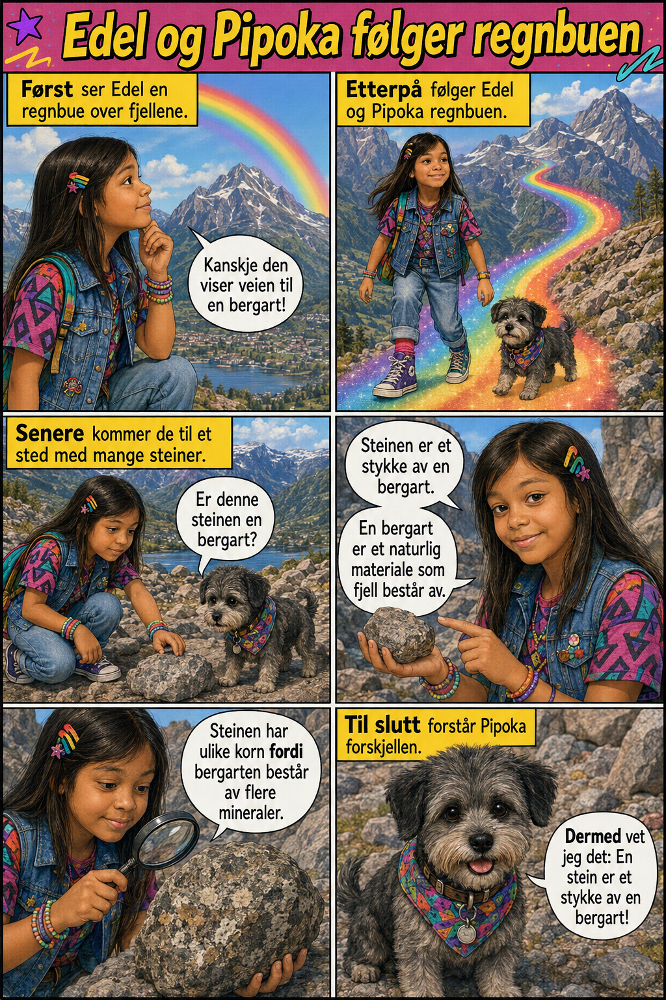

🎯 DENNE HISTORIEN ØVER PÅ
Årsak og virkning: fordi (hvem/hva) + derfor/dermed (verbet på plass to).
| Årsak | Bindeord | Virkning |
|---|---|---|
| Magmaen kjøles ned | fordi | temperaturen blir lavere. |
| Magmaen størkner. | Dermed | dannes granitt. |
| Granitt er hard. | Derfor | kan den brukes i bygninger. |
| Vær og vann bryter steinen. | Dermed | dannes en sedimentær bergart. |
⚠️ NB! Rett etter «fordi» kommer HVEM/HVA (grunnen), i vanlig rekkefølge. Men rett etter «derfor»/«dermed» kommer VERBET først!
🔑 Nytt ord i dag
🎯 dannes
= blir laget, blir til – steg for steg
«Granitt dannes av magma som kjøler seg ned.»
magma = smeltet stein
bergart = stein/fjell-type
hard = vanskelig å bryte i stykker

Les teksten. Se hva som skjer rett etter «fordi», og hva som skjer rett etter «derfor»/«dermed».


fordi/derfor/dermed
hvem/hva
verb
✍️ Skriv tre setninger om bergarter. Bruk minst ett fordi og ett derfor/dermed.
Du kan begynne slik:
Granitt er hard fordi den består av harde mineraler.
Derfor kan den brukes i bygninger.
Dermed forstår jeg hvordan en bergart blir til.
Derfor kan den brukes i bygninger.
Dermed forstår jeg hvordan en bergart blir til.
🌟 Til slutt: Hva synes du var mest spennende med bergarter i dag?
🎧 Lytt til hver del. Ikke se på teksten. Etterpå skal du fortelle med dine egne ord hva du hørte.
⭐ Bonus: fordi + derfor/dermed
Magmaen størkner fordi temperaturen blir lavere. Dermed dannes en magmatisk bergart.
Granitt er hard og slitesterk. Derfor brukes den i bygninger og trapper.
Vær og vann bryter ned steinen fordi de jobber over veldig lang tid. Dermed dannes en sedimentær bergart.
Husk: etter fordi kommer hvem/hva, men etter derfor/dermed kommer verbet!